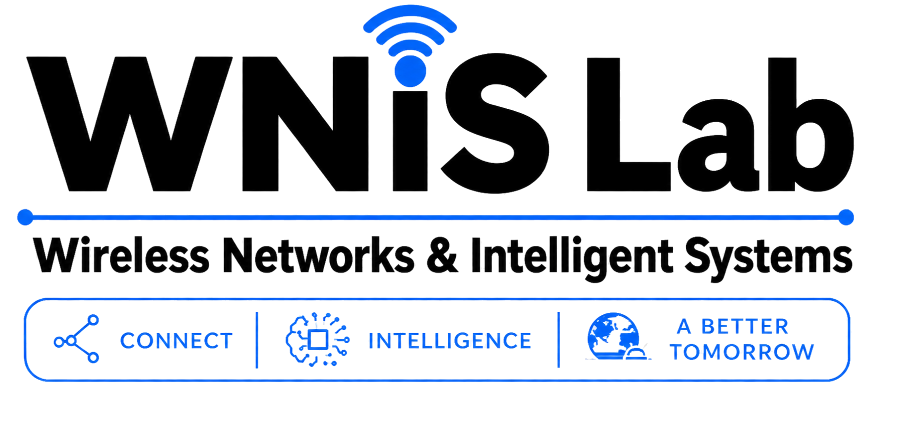
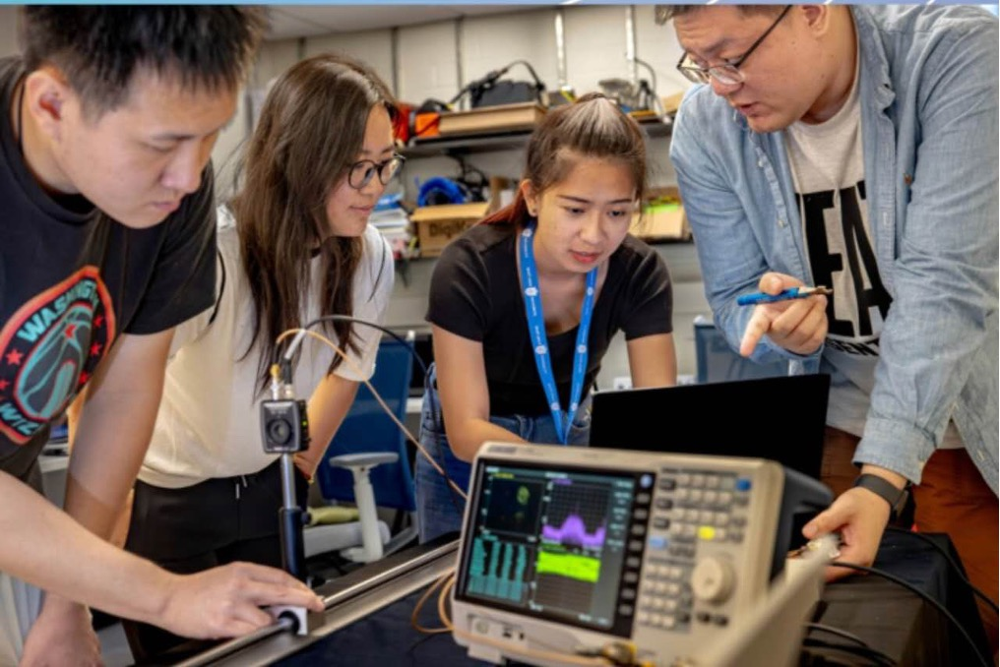
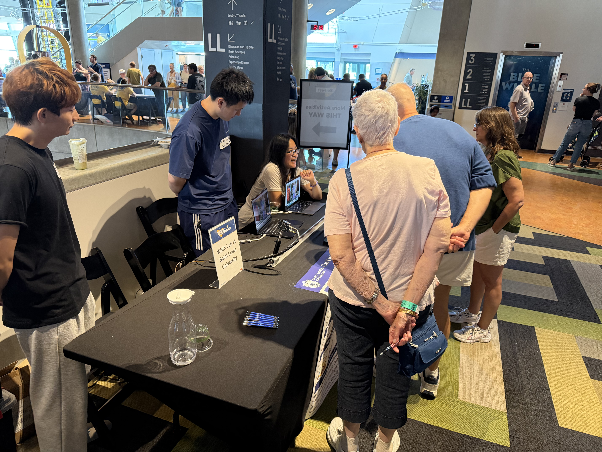
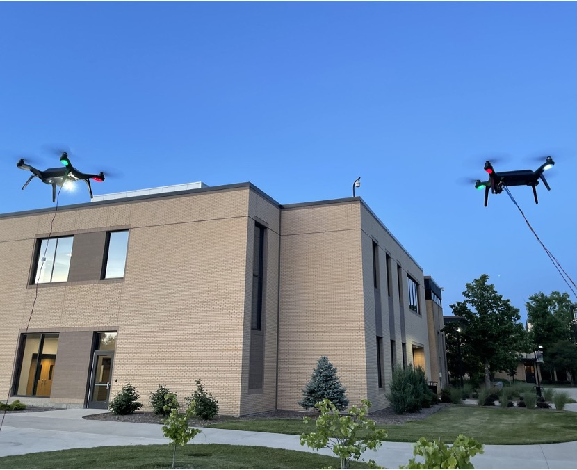

Wireless Networks & Intelligent Systems Lab
We build intelligent wireless systems that connect the physical and digital worlds.
Our work brings together wireless communication, sensing, artificial intelligence, and programmable networking. We design and evaluate next-generation systems spanning optical and underwater links, aerial networks, hybrid radio environments, and digital twins.
The WNIS Lab is part of the
Department of Computer Science at Saint Louis University.
Research areas
Dr. Nan Cen · Director ·
nan.cen@slu.edu
Gallery


